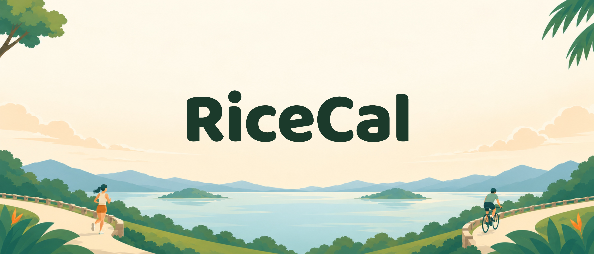
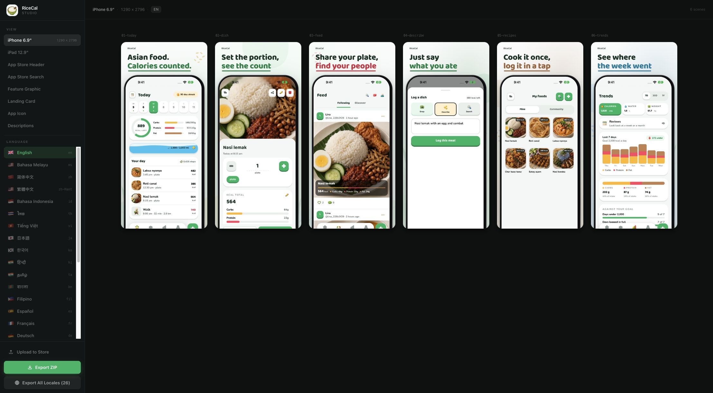
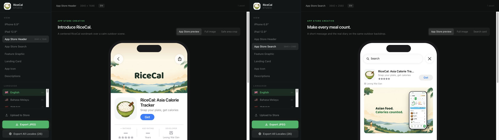
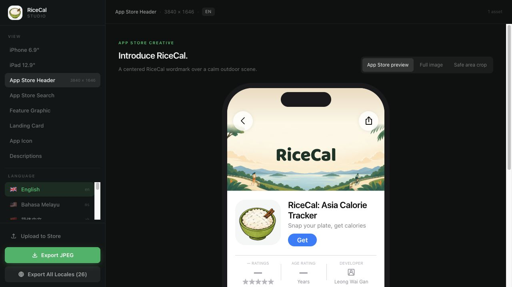
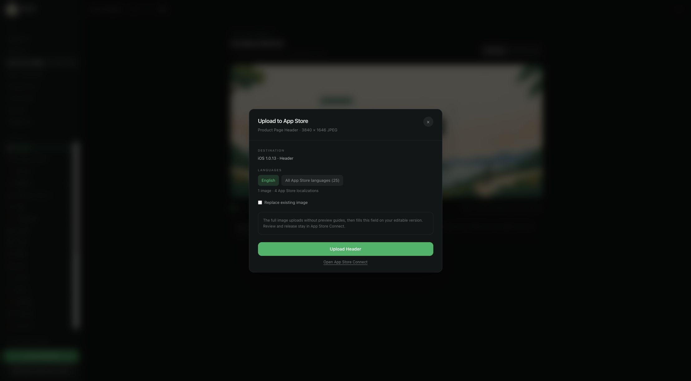

App Store header, search creative and screenshot sequence
Introduce RiceCal with a centered wordmark on a calm outdoor illustration. Show Asian-food calorie tracking in the separate search artwork and real app gallery. Keep the brand within Apple’s central safe area, and make the opening gallery a clear three-screen story.
This plan covers the static Header, animated Search creative and the existing iPhone screenshot gallery. The studio can regenerate the two creative placements and the gallery in all 26 marketing languages. Native app UI follows the existing 13-language capture set.
What Apple’s new placements change
Apple describes creative assets as optional artwork available from iOS 27 and iPadOS 27. They complement app screenshots and previews. A header introduces the brand; search artwork needs to communicate purpose and show the experience immediately. Dedicated assets or a shared universal asset can fill the two placements. Apple’s asset workflow
Apple’s design guidance favors one clear focal point, short localized text, readable central content and a cohesive visual language. Screenshots should depict the app in use and lead with its strongest features. Prices, unrelated platform logos and unverifiable recognition should stay out of creative artwork. Apple’s design guidance
| Placement | Asset specification | Production choice |
|---|---|---|
| Product-page header | 3840 × 1646, 21:9; JPEG or PNG | Dedicated RGB JPEG, quality 96%, centered RiceCal wordmark on a simplified jogging-and-cycling scene |
| Search results | 3:2; MP4, 30 or 60 fps, 5–30 seconds | 1920 × 1280 silent H.264 MP4, 30 fps, 7.2 seconds, localized meal and animated camera |
| Universal alternative | 5244 × 2950, 16:9, PNG | Documented alternative; dedicated layouts are implemented |
| iPhone gallery | Current accepted project canvas: 1290 × 2796 | Six PNG screenshots using existing 1320 × 2868 native captures |
Creative images cannot include an alpha channel. The shared outdoor background is opaque RGB artwork, Header exports as an opaque JPEG. Search exports as a silent looping MP4. Apple’s creative specifications
Design diagnosis
Keep the useful foundation
Real localized app screens, appetizing regional food, the RiceCal green palette, rounded typography and a consistent device crop already create a recognizable set. The meal-detail image and the Today diary provide the clearest evidence of what the product does.
Make the opening work harder
The old first headline is generic. The second panel carries five features and a community rating, so it becomes dense when reduced in search. The meal-detail screen appears too late. The new opening explicitly names Asian-food calorie tracking and gives each screenshot one job.
The previous rating panel is removed from the exported gallery. This keeps the opening focused on visible product behavior and avoids making the composition depend on a rating or user count that can become outdated. The existing translated feature labels remain available to the iPad and other graphics.
Header composition
Focal point: the RiceCal name, centered at a readable size. The larger dark green wordmark sits on broad, quiet cream sky. The regenerated park composition lowers the mountains, lake and paths, with the small jogger and cyclist farther apart near the outer edges. This gives the brand its own clear space.

The background comes from the selected outdoor concept, regenerated with the built-in image-generation tool to create more space for the content. The Header uses a panoramic composition with both complete activity figures on the lower paths. The name uses 460-pixel type, calibrated in the live 393-pixel App Store phone preview. The added icon has been removed from the artwork. The brand sits slightly above the center of the guide, on clear sky above the horizon. Branding is composed separately, so the Header has no additional text.
RiceCal wordmark
The header template’s safe rectangle starts at x 1097, y 493 and measures 1646 × 661. The whole wordmark stays inside it, against quiet sky. The surrounding park provides detail in the full Header, while tighter crops prioritize the brand. These are template coordinates, not a guarantee for every future App Store layout. Apple header template
Search composition
Message: “Count calories the asian way” in English. Each other locale uses its representative country in the translated headline and one local favorite in the phone camera. English and Malay keep Nasi Lemak. The original park background remains. The camera has a shutter, scan brackets and a moving beam, with no RiceCal name in the artwork.
The canonical locale and food catalog records every headline, camera label, food image and generation prompt. A language used in several countries uses one representative country; these are recognizable local favorites rather than a claimed consumption ranking. There is one creative per locale, without variation choices.
Search uses a 3840 × 2560 composition for capture and a 1920 × 1280 MP4 for export. The two-line headline starts at x 560; the phone starts at x 2500, y 208. The scan lasts 7.2 seconds at 30 fps and loops through two identical cycles. Downloads and uploads use the same encoder and camera geometry. Apple’s template safe rectangle remains x 836, y 765, 2168 × 1030; tighter crops can trim peripheral elements.
Dedicated artwork is preferable for this first version because a wide emotional header and a taller search composition need different balance. A universal design has a much smaller shared center: x 1921, y 660, 1402 × 962 on a 5244 × 2950 canvas. It would force the app screen to be smaller. Apple universal template
Screenshot story
| Order | Message | Evidence | Reason for this position |
|---|---|---|---|
| 01 | A calorie diary for Asian food | Today: calories remaining, macros, water and meals | Names the category and shows the daily benefit |
| 02 | Set the portion, see the count | Meal photograph, serving controls and nutrition | Makes food recognition and portion tracking concrete |
| 03 | Share your plate, find your people | Feed with followed cooks, food photos and nutrition | Brings sharing and discovering food into the first three pages |
| 04 | Just say what you ate | Real meal-entry screen with a natural-language example | Answers how much effort logging takes |
| 05 | Cook it once, log it in a tap | Saved foods and recipe photographs | Shows how repeated meals become easier |
| 06 | See where the week went | Calorie, macro and habit trends | Moves from daily action to longer-term insight |
The first three retain the continuous mint panorama, but each works by itself. All six keep the same phone scale and crop. Headlines move to a consistent left alignment with more margin, a small RiceCal signature and darker green emphasis for readability. No new nutritional values, controls or screens are invented.

Localization and capture plan
- Translate the message by placement. Keep the RiceCal Header wordmark consistent across all 26 marketing languages. Localize the two-line search message and its native UI. Fit the search lines after local fonts load, and check long Latin and Cyrillic text along with Chinese, Thai, Hindi, Tamil and Bengali.
- Use native captures where available. Match the existing app language folders, including the separate simplified and traditional Chinese mappings. Other marketing languages retain English app UI according to the project’s existing fallback.
- Refresh native screens when the UI changes. The 17 October 2026 set captures app 1.1.0 in all 13 supported app languages: Today, the workout logger, meal details, saved foods, trends and Feed. The describe page and the retired activity page have been removed. All 26 marketing languages use these screens in six phone scenes and five wide iPad scenes.
- Preserve capture provenance. Record each native image’s checksum, app source revision, verified route and fixture date in capture.json. Keep the shared background’s generation and edit prompts, dimensions and checksum, and include its provenance in creative-asset locale ZIPs.
- Keep iPad honest. This revision adds iPad-compatible creative placements but does not create a new native iPad screenshot set. The current iPad gallery still uses phone screens on wide canvases.
Production and verification
The studio follows Money2Time’s latest Studio and phone preview. App Store preview is the default: Header sits above RiceCal’s icon, listing and first two localized screenshots; Search appears in a 353 × 235 result card beneath the listing. The 393 × 852 phone screen scales to the available Studio width. Full image remains available for both placements, with Safe area crop for Header and Search card for Search. Header’s Show Apple safe area checkbox sits below the full image and is disabled in crop mode. Store chrome and template guides stay outside the export surface. The canvas has its own line height to prevent inherited preview typography from shifting the artwork. Downloads and uploads always contain the full artwork without guides. This is an approximation of the supplied examples; App Store Connect Preview remains the final placement check.

Upload to Store sends Header as opaque PNG, or Search as the same animated MP4 produced by Export MP4. It validates the video, waits for Asset Library processing and assigns the correct image or video to the editable iOS version. Upload the current language or all 25 App Store languages, covering 31 store localizations. Existing placements remain unless Replace existing asset is selected. Failed replacements attempt to restore the previous image or video, and partial failures retain the uploaded asset ID. This requires asc 5.14.1 or later and FFmpeg. Review and release remain in App Store Connect.


- Inspect both compositions at full-artwork and central safe-area sizes. Check the small search presentation, where the category message must remain readable.
- Inspect all marketing languages for headline overflow, unexpected third lines and text touching the phone. Confirm the correct native screenshots load without missing images.
- Export actual files through the studio. Check exact dimensions, format, RGB color mode, opaque background, complete locale coverage and absence of guides.
- Run the project’s type, build, screenshot-integrity and upload-policy checks. Exercise Header JPEG and Search MP4 export, locale ZIP creation and the creative upload flow in the browser. Test upload/assignment failures and restoration against a simulated destination, and verify live destination access with read-only requests.
- Before release, use App Store Connect Preview for iPhone and iPad in supported orientations and languages. Local template checks cannot establish Apple’s final placement behavior or review outcome.
Release and experiment plan
Add the exported artwork in Product Page Information → Header and Search Results, or submit it separately through Asset Library. Creative assets receive their own review. Use the dedicated header and search files; do not put them into a device screenshot slot. Apple’s upload and review workflow
Publish the centered brand header after crop preview and approval. For a later product-page optimization test, compare it with an alternative background using the same wordmark, gallery, locales and release timing. Define the hypothesis before launch: a simple brand focal point should improve recognition and downloads from product-page views. Apple’s treatment configuration
Measure App Store conversion alongside traffic source and territory. Run to adequate sample size rather than a fixed short deadline, avoid changing several design variables at once, and keep the existing treatment if the result is inconclusive. These are experiment recommendations, not a claimed conversion gain.